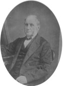

Beaubien-Perrault-Benington - Person Sheet
Beaubien-Perrault-Benington - Person Sheet

Death9 Jan 1881, Outremont, Québec
Burial11 Jan 1881, Eglise Saint-Enfant-Jésus, Montréal, Québec27
Occupationmédecin, auteur, politicien, homme d’affaires
FatherJean-Louis Beaubien (1758-1820)
MotherJeanne M. Robidas Dit Manseau (1766-1816)
Spouses

Birth19 Apr 1804, Rivière-Ouelle, Québec
Death9 Oct 1882, Montréal, Québec
BurialCrypte De L’Eglise St-Enfant-Jésus-Du-Mile-End75
FatherPierre Casgrain (1771-1828)
MotherM. Marguerite Bonenfant (1776-1825)
Marriage11 May 1829, Hôpital Général de Québec, Québec, Québec
ChildrenJules Pierre (1830-1830)
Pierre Côme Philippe (1831-1831)
Denis Auguste (1832-1832)
Pierre Philippe (1833-1834)
Hypolite Eugène (1834-1863)
Charles Thomas (1836-1841)
Louis Joseph Denis Benjamin (1837-1915)
Pierre Alfred (1838-1856)
M. Luce (1842-1897)
Charles Philippe (1843-1914)
Joseph Marie (1844-1846)
Notes for Dr. Pierre Beaubien
[DBC] BEAUBIEN, PIERRE, médecin, homme politique et propriétaire foncier, né le 13 août 1796 à Baie-du-Febvre (Baieville, Québec), fils de Jean-Louis Beaubien, cultivateur, et de Marie-Jeanne Manseau, décédé à Outremont, Québec, le 9 janvier 1881.
Après des études au séminaire de Nicolet de 1809 à 1815, Pierre Beaubien entra au petit séminaire de Montréal pour y faire une année de philosophie. Encouragé par l’abbé Jacques-Guillaume Roque*, un de ses professeurs dans cette institution, et soutenu financièrement par son père et quelques religieux de sa famille, le jeune Beaubien s’embarqua pour la France afin d’y étudier la médecine. Arrivé là-bas, il termina ses études classiques et obtint, le 27 mai 1819, le diplôme de bachelier ès lettres de l’académie de Paris. Ayant parallèlement commencé un cours en médecine vers 1817, il reçut le titre de docteur le 16 août 1822 après avoir soutenu une thèse sur le rhumatisme articulaire qu’il dédia à Joseph-Claude Récamier, son professeur à la faculté de médecine de la même académie. Au cours des cinq années suivantes, il travailla en France et fit un voyage qui l’amena en Allemagne, en Suisse et en Italie. Beaubien revint au Canada à l’automne de 1827 et, le 28 février 1828, le Bureau des examinateurs en médecine de Montréal lui décerna la licence l’autorisant à pratiquer sa profession dans la province. Le 11 mai 1829, il épousa à Québec Marie-Justine Casgrain, fille de Pierre Casgrain*, seigneur de Rivière-Ouelle, et veuve de Charles Butler Maguire, ancien chirurgien de la marine. Onze enfants naquirent de ce mariage, mais six moururent en bas âge. Quant aux survivants, deux furent ordonnés prêtres, un autre, Louis*, devint célèbre dans les milieux politiques, et l’unique fille se fit religieuse.
La médecine resta la principale activité de Beaubien, malgré la diversité de ses intérêts. Au retour de celui-ci au Canada, l’abbé Roque, son ancien professeur, qui jouissait d’une grande influence dans les milieux religieux montréalais, le fit admettre comme médecin des sulpiciens et de la communauté des Dames de la Congrégation de Notre-Dame, ainsi qu’à l’Hôpital Général de Montréal et à l’Hôtel-Dieu de Montréal. II fut le premier professeur de clinique médicale de l’Hôtel-Dieu, où il pratiqua de 1829 à 1880. Durant ces années d’exercice de la profession médicale, Beaubien aurait été un des premiers à introduire l’usage du stéthoscope au Canada. En 1849, l’école de médecine et de chirurgie de Montréal fit appel à ses services et à ceux des docteurs Eugène-Hercule Trudel, Bernard-Henri Leprohon et Jean-Baptiste-Curtius Trestler en remplacement des docteurs Daniel Arnoldi*, Francis Badgley* et William Sutherland qui étaient passés au McGill College. Il y enseigna la théorie et la pratique médicale tout en assumant ; au début des années 1860, la présidence de l’école. À ce titre, Beaubien participa à l’épineux débat sur l’affiliation de cette école à une université habilitée à décerner la licence. À la suite de l’opposition faite par le McGill College à ce sujet et des refus successifs de l’University of Toronto et de l’université Laval, l’école devait finalement s’affilier au Victoria College de Cobourg, Haut-Canada, en 1866 [V. Hector Peltier*]. Baubien fut aussi officier de santé pour la ville de Montréal de 1832 à 1836 et médecin en chef de la prison de Montréal de 1849 à sa mort.
Sous l’Union, Beaubien commença de faire de la politique active. Il fut député du comté de Montréal à l’Assemblée législative de la province du Canada du 22 novembre 1843 au 23 septembre 1844. Mais en 1844 les électeurs ne l’appuyèrent pas et il fut défait par George Moffatt*. Victorieux en 1848, il représenta le comté de Chambly jusqu’en juillet 1849. À l’Assemblée, il siégea aux côtés des réformistes et encouragea le développement des moyens de communication. Durant ces années, il se mêla aussi de politique municipale ; conseiller de la ville de Montréal de 1843 à 1846, il devint échevin en 1847.
Beaubien était également un grand propriétaire foncier. Il possédait de vastes terres à Côte-Sainte-Catherine, à Côte-Saint-Louis et à Côte-des-Neiges, sur lesquelles se trouve l’actuel cimetière de Côte-des-Neiges et où se développa la ville d’Outremont à la fin du xixe siècle. Il était aussi propriétaire par indivis avec Louis-Hippolyte La Fontaine* et Joseph Bourret* de l’arrière-fief de La Gauchetière qui leur fut cédé par les sulpiciens le 1er juin 1844. En 1868, Pierre Beaubien fit don à Mgr Ignace Bourget de quatre de ses lots à Côte-Saint-Louis afin de permettre l’établissement d’une maison d’éducation destinée à la jeunesse catholique. Les Clercs de Saint-Viateur y construisirent, en 1879, l’Institution catholique des sourds-muets pour la province de Québec. Trois années avant sa mort, il céda à son fils Louis les 22 lots qu’il possédait encore dans cette municipalité.
Bien qu’il soit difficile à cerner, le rôle que joua Beaubien dans le développement des sociétés bancaires québécoises mérite également d’être signalé. Il collabora à la mise sur pied de la Banque du peuple et, au moment de sa reconnaissance juridique en 1835, il faisait partie du conseil d’administration. En 1846, il participa aussi à la fondation de la Banque d’épargne de la cité et du district de Montréal, lancée par Mgr Bourget, et siégea au conseil d’administration jusqu’en 1850.
Beaubien œuvra également au sein de quelques sociétés. Dès 1834, il apparaît comme membre de la Société d’histoire naturelle de Montréal. L’Association Saint-Jean-Baptiste de Montréal le comptait aussi parmi ses membres et l’élut président en 1859.
Même si Pierre Beaubien n’a pas été un homme public très en vue, il reste que sa carrière très diversifiée et sa grande fortune ont fait de lui une figure marquante de la société montréalaise du milieu du xixe siècle.
Jacques Bernier
Pierre Beaubien est l’auteur d’une thèse en médecine intitulée Dissertation sur le rhumatisme articulaire, présentée et soutenue à la faculté de médecine de Paris, le 16 août 1822 (Paris, 1822).
ANQ-M, Minutiers, Thomas Bédouin, 19 avril 1834 ; J.-J. Girouard, 23 juill. 1842, 15 mai 1844 ; L.-O. Hétu, 24 août 1878 ; Édouard Lafleur, 8 avril 1863 ; D.-É. Papineau, 6 févr. 1854.— ANQ-Q, Minutiers, Louis Panet, 10 mai 1829.— AP, Saint-Antoine-de-Padoue (Baieville), Reg. des baptêmes, mariages et sépultures, 13 août 1796.— Arch. privées, Pierre Beaubien (Hudson, Québec), Certificat d’admission à la Soc. d’hist. naturelle de Montréal, 3 avril 1834 ; Corr., 8 janv. 1864, 23 janv. 1877, 8 mai 1880 ; Diplômes de l’académie de Paris, 1819, 1822 ; Licence to practice physic, surgery and midwifery in this province, 28 févr. 1828.— ASQ, Univ., Sér. U, Cartons 101, 8 déc. 1860, 9 janv. 1861 ; 102.— B.-C., chambre d’Assemblée, Journaux, 1835–1836.— La Minerve, 6 nov. 1866.— Le Monde, 10 janv. 1881.— F.-J. Audet, Les députés de Montréal, 247, 270.— C.-P. Beaubien, Écrin d’amour familial : détails historiques au sujet d’une famille, comme il y en a tant d’autres au Canada qui devraient avoir leur histoire (Montréal, 1914), 146s., 149, 151, 163.— H.-J.-J.-B. Chouinard, Fête nationale des Canadiens français célébrée à Québec en 1880 : histoire, discours, rapports [...] (Québec, 1881), 615.— Cornell, Alignment of political groups, 11, 15s., 24–28.— Histoire de la corporation de la cité de Montréal depuis son origine jusqu’à nos jours [...], J.-C. Lamothe et al., édit. (Montréal, 1903).— Robert Rumilly, Histoire d’Outremont, 1875–1975 (Montréal, 1975), 14.— T. T. Smyth, The first hundred years : history of Montreal City District Savings Bank, 1846–1946 (Montréal, [1946]), 161.— « Le Dr Beaubien », L’Union médicale du Canada (Montréal), 10 (1881) : 96.— L.-D. Mignault, « Histoire de l’école de médecine et de chirurgie de Montréal », L’Union médicale du Canada, 55 (1926) : 597–674.
11 children.
[Rumilly] Décède chez son fils Louis.
240 Pierre Beaubien fit partie du premier conseil municipal de Montréal élu par les contribuables. Il vendit le terrain pour l’édification du cimetière de la Côte des Neiges pour la somme de $1200.
27 Une rue, une place et un parc sont nommés en son honneur à Montréal. Une première rue Beaubien,aujourd’hui rue St-Dominique, existe deja en 1879, entre l’avenue Laurier et la rue St-Viateur, à proximité des terrains donnés par Pierre Beaubien à Mgr Bourget, en 1868, pour la construction de l’Institut des sourds-muets et de celle de l’église Saint-Enfant-Jésus où le médecin est inhumé. Il a cédé à la municipalité de la ville de St-Louis plusieurs voies qu;il nomme Maguire, de Gaspé, Beaubien, Casgrain, Lauretta et Alma, d’après les membres de sa famille.
22 Né à Baie-du-Febvre et baptisé dans la paroisse Saint-Antoine-de-Padoue, le 13 août 1796, fils de Jean-Louis Beaubien, cultivateur, et de Marie-Jeanne Manseau.
Étudia au séminaire de Nicolet de 1809 à 1815, puis fit une année de philosophie au petit séminaire de Montréal. Poursuivit ses études en France: reçut de l'académie de Paris le
diplôme de bachelier ès lettres, en 1819, et le titre de docteur en médecine, en 1822.
Exerça sa profession en France jusqu'en 1827. Après son retour au Bas-Canada, obtint en 1828, du Bureau d'examinateurs en médecine du district de Montréal, le droit de
pratiquer son art, et s'établit à Montréal. Fut médecin des Sulpiciens et de la Congrégation de Notre-Dame, officier de santé pour la ville de Montréal de 1832 à 1836, et exerça à
l'Hôpital Général ainsi que, de 1829 à 1880, à l'Hôtel-Dieu.
Élu député de la cité de Montréal à une élection partielle le 22 novembre 1843; appartenait au groupe canadien-français. Défait en 1844. Représenta le quartier Saint-Laurent au
conseil municipal de Montréal, de 1842 à 1844, et le quartier Saint-Louis, en 1846-1847. Élu député de Chambly en 1848; fit partie du groupe canadien-français. Son siège
devint vacant le 31 juillet 1849, en raison de sa nomination au poste de médecin et chirurgien de la prison de Montréal, qu'il occupa jusqu'à sa mort.
Enseigna la clinique médicale à l'Hôtel-Dieu et, à compter de 1849, la théorie et la pratique médicale à l'École de médecine et de chirurgie de Montréal, dont il fut président au
début des années 1860. Propriétaire foncier. Cofondateur et administrateur de la Banque du peuple et de la Banque d'épargne de la cité et du district de Montréal.
Président de l'Association Saint-Jean-Baptiste de Montréal. Bienfaiteur de l'Institution catholique des sourds-muets pour la province de Québec.
Décédé à Outremont, le 9 janvier 1881, à l'âge de 84 ans et 4 mois. Inhumé dans l'église du Saint-Enfant-Jésus, au coteau Saint-Louis, à Montréal, le 12 janvier 1881.
Avait épousé en la chapelle de l'Hôpital Général de Québec, dans la paroisse Notre-Dame-des-Anges, le 11 mai 1829, Marie-Justine Casgrain, fille du seigneur Pierre Casgrain
et de Marie-Marguerite Bonnenfant, et veuve de Charles Butler Maguire, chirurgien de la Marine.
Père de Louis Beaubien. Oncle de Joseph-Octave Beaubien. Beau-frère de Charles-Eusèbe Casgrain.
241 Le 11 mai 1829 nous Evêque de Québec soussigné après avoir accordé le sept du courant dispense de domicile et de la publication de trois bans de mariage entre Pierre Beaubien, ecuyer Médecin et Chirurgien licencié domicilié à Montréal fils majeur de feu Sieur Jean Louis Beaubien et de défunte Dame Marie Jeanne Manseau ses père et mère d’une part, et Dame Marie Justine Casgrain domiciliée à Québec, veuve de feu Charles Butler Maguire de son vivant de St Michel de Ladurantaye écuyer Médecin et Chirurgien d’autre part ne s’étant découvert aucun empêchement au dit mariage avons reçu leur mutuel consentement en présence de Messire Jean Louis Beaubien, prêtre, curé de St-THomas et de Sieur Joseph Beaubien, frères de l’époux, de Pierre Casgrain, ecuyer Seigneur de la Bouteillerie ?? de Philippe Panet ecuyer Avocat beau-frère de l’épouse, lesquels ainsi que plusieurs autres parents et amis ont signé avec nous et les dits époux ??
Signé:
P. Beaubien
Justine C Maguire
J Letellier
P T Casgrain
J L Beaubien
Jos Beaubien, ptre
Ph Panet
??
C Lebourdais
C E {??) Casgrain
??
H C Fortier, ptre
Bern?? evêque de Québec
{tous les parents étaient décédés)
239[bapteme] 13 aout 1796, fils de Jean Louis Beaubien Trottier? de cette paroisse et de son epouse Jeanne Manseau
10 fils et 1 fille
Fils: 6 morts en bas âge;
Sur l’histoire du Mile End
http://memoire.mile-end.qc.ca/?p=1052&lang=fr
necrologie
https://www.canadiana.ca/view/oocihm.8_05196_23/51?r=0&s=1
https://www.canadiana.ca/view/oocihm.8_05175_110/49?r=0&s=1
Assn Medicale Canadienne, avec WH Hingston 1868
https://www.canadiana.ca/view/oocihm.04095/31?r=0&s=1
Commissaire des Ecoles catholiques de Mtl 1846-9, avec Mgr A Pinsonnault (1848-9)
https://www.canadiana.ca/view/oocihm.11427/10?r=0&s=1
https://www.canadiana.ca/view/oocihm.11427/11?r=0&s=1
Banque du Peuple 1871
https://www.canadiana.ca/view/oocihm.04081/7?r=0&s=1
Livre de renvoi de Cote St Louis 1872
https://www.canadiana.ca/view/oocihm.13664/34?r=0&s=1
Livre de renvoi de mTL 1878
https://www.canadiana.ca/view/oocihm.13616/223?r=0&s=1
Laval vs Victoria College et Ecole de Medecine et Chirurgie de Mtl
https://www.canadiana.ca/view/oocihm.01528
Cimetirere Cdes Neiges
https://www.canadiana.ca/view/oocihm.11130/49?r=0&s=1
Après des études au séminaire de Nicolet de 1809 à 1815, Pierre Beaubien entra au petit séminaire de Montréal pour y faire une année de philosophie. Encouragé par l’abbé Jacques-Guillaume Roque*, un de ses professeurs dans cette institution, et soutenu financièrement par son père et quelques religieux de sa famille, le jeune Beaubien s’embarqua pour la France afin d’y étudier la médecine. Arrivé là-bas, il termina ses études classiques et obtint, le 27 mai 1819, le diplôme de bachelier ès lettres de l’académie de Paris. Ayant parallèlement commencé un cours en médecine vers 1817, il reçut le titre de docteur le 16 août 1822 après avoir soutenu une thèse sur le rhumatisme articulaire qu’il dédia à Joseph-Claude Récamier, son professeur à la faculté de médecine de la même académie. Au cours des cinq années suivantes, il travailla en France et fit un voyage qui l’amena en Allemagne, en Suisse et en Italie. Beaubien revint au Canada à l’automne de 1827 et, le 28 février 1828, le Bureau des examinateurs en médecine de Montréal lui décerna la licence l’autorisant à pratiquer sa profession dans la province. Le 11 mai 1829, il épousa à Québec Marie-Justine Casgrain, fille de Pierre Casgrain*, seigneur de Rivière-Ouelle, et veuve de Charles Butler Maguire, ancien chirurgien de la marine. Onze enfants naquirent de ce mariage, mais six moururent en bas âge. Quant aux survivants, deux furent ordonnés prêtres, un autre, Louis*, devint célèbre dans les milieux politiques, et l’unique fille se fit religieuse.
La médecine resta la principale activité de Beaubien, malgré la diversité de ses intérêts. Au retour de celui-ci au Canada, l’abbé Roque, son ancien professeur, qui jouissait d’une grande influence dans les milieux religieux montréalais, le fit admettre comme médecin des sulpiciens et de la communauté des Dames de la Congrégation de Notre-Dame, ainsi qu’à l’Hôpital Général de Montréal et à l’Hôtel-Dieu de Montréal. II fut le premier professeur de clinique médicale de l’Hôtel-Dieu, où il pratiqua de 1829 à 1880. Durant ces années d’exercice de la profession médicale, Beaubien aurait été un des premiers à introduire l’usage du stéthoscope au Canada. En 1849, l’école de médecine et de chirurgie de Montréal fit appel à ses services et à ceux des docteurs Eugène-Hercule Trudel, Bernard-Henri Leprohon et Jean-Baptiste-Curtius Trestler en remplacement des docteurs Daniel Arnoldi*, Francis Badgley* et William Sutherland qui étaient passés au McGill College. Il y enseigna la théorie et la pratique médicale tout en assumant ; au début des années 1860, la présidence de l’école. À ce titre, Beaubien participa à l’épineux débat sur l’affiliation de cette école à une université habilitée à décerner la licence. À la suite de l’opposition faite par le McGill College à ce sujet et des refus successifs de l’University of Toronto et de l’université Laval, l’école devait finalement s’affilier au Victoria College de Cobourg, Haut-Canada, en 1866 [V. Hector Peltier*]. Baubien fut aussi officier de santé pour la ville de Montréal de 1832 à 1836 et médecin en chef de la prison de Montréal de 1849 à sa mort.
Sous l’Union, Beaubien commença de faire de la politique active. Il fut député du comté de Montréal à l’Assemblée législative de la province du Canada du 22 novembre 1843 au 23 septembre 1844. Mais en 1844 les électeurs ne l’appuyèrent pas et il fut défait par George Moffatt*. Victorieux en 1848, il représenta le comté de Chambly jusqu’en juillet 1849. À l’Assemblée, il siégea aux côtés des réformistes et encouragea le développement des moyens de communication. Durant ces années, il se mêla aussi de politique municipale ; conseiller de la ville de Montréal de 1843 à 1846, il devint échevin en 1847.
Beaubien était également un grand propriétaire foncier. Il possédait de vastes terres à Côte-Sainte-Catherine, à Côte-Saint-Louis et à Côte-des-Neiges, sur lesquelles se trouve l’actuel cimetière de Côte-des-Neiges et où se développa la ville d’Outremont à la fin du xixe siècle. Il était aussi propriétaire par indivis avec Louis-Hippolyte La Fontaine* et Joseph Bourret* de l’arrière-fief de La Gauchetière qui leur fut cédé par les sulpiciens le 1er juin 1844. En 1868, Pierre Beaubien fit don à Mgr Ignace Bourget de quatre de ses lots à Côte-Saint-Louis afin de permettre l’établissement d’une maison d’éducation destinée à la jeunesse catholique. Les Clercs de Saint-Viateur y construisirent, en 1879, l’Institution catholique des sourds-muets pour la province de Québec. Trois années avant sa mort, il céda à son fils Louis les 22 lots qu’il possédait encore dans cette municipalité.
Bien qu’il soit difficile à cerner, le rôle que joua Beaubien dans le développement des sociétés bancaires québécoises mérite également d’être signalé. Il collabora à la mise sur pied de la Banque du peuple et, au moment de sa reconnaissance juridique en 1835, il faisait partie du conseil d’administration. En 1846, il participa aussi à la fondation de la Banque d’épargne de la cité et du district de Montréal, lancée par Mgr Bourget, et siégea au conseil d’administration jusqu’en 1850.
Beaubien œuvra également au sein de quelques sociétés. Dès 1834, il apparaît comme membre de la Société d’histoire naturelle de Montréal. L’Association Saint-Jean-Baptiste de Montréal le comptait aussi parmi ses membres et l’élut président en 1859.
Même si Pierre Beaubien n’a pas été un homme public très en vue, il reste que sa carrière très diversifiée et sa grande fortune ont fait de lui une figure marquante de la société montréalaise du milieu du xixe siècle.
Jacques Bernier
Pierre Beaubien est l’auteur d’une thèse en médecine intitulée Dissertation sur le rhumatisme articulaire, présentée et soutenue à la faculté de médecine de Paris, le 16 août 1822 (Paris, 1822).
ANQ-M, Minutiers, Thomas Bédouin, 19 avril 1834 ; J.-J. Girouard, 23 juill. 1842, 15 mai 1844 ; L.-O. Hétu, 24 août 1878 ; Édouard Lafleur, 8 avril 1863 ; D.-É. Papineau, 6 févr. 1854.— ANQ-Q, Minutiers, Louis Panet, 10 mai 1829.— AP, Saint-Antoine-de-Padoue (Baieville), Reg. des baptêmes, mariages et sépultures, 13 août 1796.— Arch. privées, Pierre Beaubien (Hudson, Québec), Certificat d’admission à la Soc. d’hist. naturelle de Montréal, 3 avril 1834 ; Corr., 8 janv. 1864, 23 janv. 1877, 8 mai 1880 ; Diplômes de l’académie de Paris, 1819, 1822 ; Licence to practice physic, surgery and midwifery in this province, 28 févr. 1828.— ASQ, Univ., Sér. U, Cartons 101, 8 déc. 1860, 9 janv. 1861 ; 102.— B.-C., chambre d’Assemblée, Journaux, 1835–1836.— La Minerve, 6 nov. 1866.— Le Monde, 10 janv. 1881.— F.-J. Audet, Les députés de Montréal, 247, 270.— C.-P. Beaubien, Écrin d’amour familial : détails historiques au sujet d’une famille, comme il y en a tant d’autres au Canada qui devraient avoir leur histoire (Montréal, 1914), 146s., 149, 151, 163.— H.-J.-J.-B. Chouinard, Fête nationale des Canadiens français célébrée à Québec en 1880 : histoire, discours, rapports [...] (Québec, 1881), 615.— Cornell, Alignment of political groups, 11, 15s., 24–28.— Histoire de la corporation de la cité de Montréal depuis son origine jusqu’à nos jours [...], J.-C. Lamothe et al., édit. (Montréal, 1903).— Robert Rumilly, Histoire d’Outremont, 1875–1975 (Montréal, 1975), 14.— T. T. Smyth, The first hundred years : history of Montreal City District Savings Bank, 1846–1946 (Montréal, [1946]), 161.— « Le Dr Beaubien », L’Union médicale du Canada (Montréal), 10 (1881) : 96.— L.-D. Mignault, « Histoire de l’école de médecine et de chirurgie de Montréal », L’Union médicale du Canada, 55 (1926) : 597–674.
11 children.
[Rumilly] Décède chez son fils Louis.
240 Pierre Beaubien fit partie du premier conseil municipal de Montréal élu par les contribuables. Il vendit le terrain pour l’édification du cimetière de la Côte des Neiges pour la somme de $1200.
27 Une rue, une place et un parc sont nommés en son honneur à Montréal. Une première rue Beaubien,aujourd’hui rue St-Dominique, existe deja en 1879, entre l’avenue Laurier et la rue St-Viateur, à proximité des terrains donnés par Pierre Beaubien à Mgr Bourget, en 1868, pour la construction de l’Institut des sourds-muets et de celle de l’église Saint-Enfant-Jésus où le médecin est inhumé. Il a cédé à la municipalité de la ville de St-Louis plusieurs voies qu;il nomme Maguire, de Gaspé, Beaubien, Casgrain, Lauretta et Alma, d’après les membres de sa famille.
22 Né à Baie-du-Febvre et baptisé dans la paroisse Saint-Antoine-de-Padoue, le 13 août 1796, fils de Jean-Louis Beaubien, cultivateur, et de Marie-Jeanne Manseau.
Étudia au séminaire de Nicolet de 1809 à 1815, puis fit une année de philosophie au petit séminaire de Montréal. Poursuivit ses études en France: reçut de l'académie de Paris le
diplôme de bachelier ès lettres, en 1819, et le titre de docteur en médecine, en 1822.
Exerça sa profession en France jusqu'en 1827. Après son retour au Bas-Canada, obtint en 1828, du Bureau d'examinateurs en médecine du district de Montréal, le droit de
pratiquer son art, et s'établit à Montréal. Fut médecin des Sulpiciens et de la Congrégation de Notre-Dame, officier de santé pour la ville de Montréal de 1832 à 1836, et exerça à
l'Hôpital Général ainsi que, de 1829 à 1880, à l'Hôtel-Dieu.
Élu député de la cité de Montréal à une élection partielle le 22 novembre 1843; appartenait au groupe canadien-français. Défait en 1844. Représenta le quartier Saint-Laurent au
conseil municipal de Montréal, de 1842 à 1844, et le quartier Saint-Louis, en 1846-1847. Élu député de Chambly en 1848; fit partie du groupe canadien-français. Son siège
devint vacant le 31 juillet 1849, en raison de sa nomination au poste de médecin et chirurgien de la prison de Montréal, qu'il occupa jusqu'à sa mort.
Enseigna la clinique médicale à l'Hôtel-Dieu et, à compter de 1849, la théorie et la pratique médicale à l'École de médecine et de chirurgie de Montréal, dont il fut président au
début des années 1860. Propriétaire foncier. Cofondateur et administrateur de la Banque du peuple et de la Banque d'épargne de la cité et du district de Montréal.
Président de l'Association Saint-Jean-Baptiste de Montréal. Bienfaiteur de l'Institution catholique des sourds-muets pour la province de Québec.
Décédé à Outremont, le 9 janvier 1881, à l'âge de 84 ans et 4 mois. Inhumé dans l'église du Saint-Enfant-Jésus, au coteau Saint-Louis, à Montréal, le 12 janvier 1881.
Avait épousé en la chapelle de l'Hôpital Général de Québec, dans la paroisse Notre-Dame-des-Anges, le 11 mai 1829, Marie-Justine Casgrain, fille du seigneur Pierre Casgrain
et de Marie-Marguerite Bonnenfant, et veuve de Charles Butler Maguire, chirurgien de la Marine.
Père de Louis Beaubien. Oncle de Joseph-Octave Beaubien. Beau-frère de Charles-Eusèbe Casgrain.
241 Le 11 mai 1829 nous Evêque de Québec soussigné après avoir accordé le sept du courant dispense de domicile et de la publication de trois bans de mariage entre Pierre Beaubien, ecuyer Médecin et Chirurgien licencié domicilié à Montréal fils majeur de feu Sieur Jean Louis Beaubien et de défunte Dame Marie Jeanne Manseau ses père et mère d’une part, et Dame Marie Justine Casgrain domiciliée à Québec, veuve de feu Charles Butler Maguire de son vivant de St Michel de Ladurantaye écuyer Médecin et Chirurgien d’autre part ne s’étant découvert aucun empêchement au dit mariage avons reçu leur mutuel consentement en présence de Messire Jean Louis Beaubien, prêtre, curé de St-THomas et de Sieur Joseph Beaubien, frères de l’époux, de Pierre Casgrain, ecuyer Seigneur de la Bouteillerie ?? de Philippe Panet ecuyer Avocat beau-frère de l’épouse, lesquels ainsi que plusieurs autres parents et amis ont signé avec nous et les dits époux ??
Signé:
P. Beaubien
Justine C Maguire
J Letellier
P T Casgrain
J L Beaubien
Jos Beaubien, ptre
Ph Panet
??
C Lebourdais
C E {??) Casgrain
??
H C Fortier, ptre
Bern?? evêque de Québec
{tous les parents étaient décédés)
239[bapteme] 13 aout 1796, fils de Jean Louis Beaubien Trottier? de cette paroisse et de son epouse Jeanne Manseau
10 fils et 1 fille
Fils: 6 morts en bas âge;
Sur l’histoire du Mile End
http://memoire.mile-end.qc.ca/?p=1052&lang=fr
necrologie
https://www.canadiana.ca/view/oocihm.8_05196_23/51?r=0&s=1
https://www.canadiana.ca/view/oocihm.8_05175_110/49?r=0&s=1
Assn Medicale Canadienne, avec WH Hingston 1868
https://www.canadiana.ca/view/oocihm.04095/31?r=0&s=1
Commissaire des Ecoles catholiques de Mtl 1846-9, avec Mgr A Pinsonnault (1848-9)
https://www.canadiana.ca/view/oocihm.11427/10?r=0&s=1
https://www.canadiana.ca/view/oocihm.11427/11?r=0&s=1
Banque du Peuple 1871
https://www.canadiana.ca/view/oocihm.04081/7?r=0&s=1
Livre de renvoi de Cote St Louis 1872
https://www.canadiana.ca/view/oocihm.13664/34?r=0&s=1
Livre de renvoi de mTL 1878
https://www.canadiana.ca/view/oocihm.13616/223?r=0&s=1
Laval vs Victoria College et Ecole de Medecine et Chirurgie de Mtl
https://www.canadiana.ca/view/oocihm.01528
Cimetirere Cdes Neiges
https://www.canadiana.ca/view/oocihm.11130/49?r=0&s=1